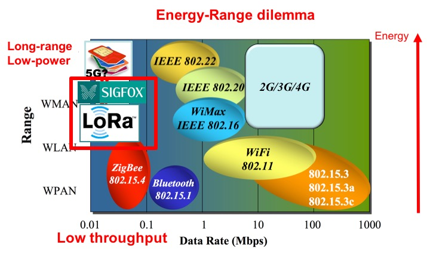
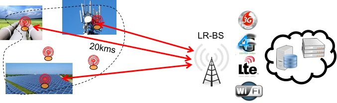
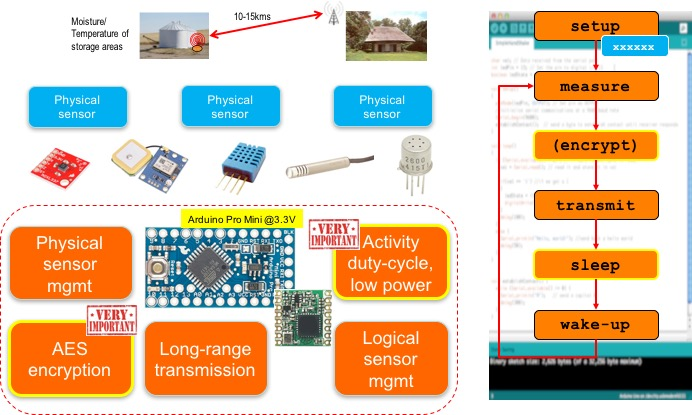

Until recently, telco mobile communication infrastructure (e.g. GSM/GPRS, 3G/4G) were the only choice for long-range connectivity of remote devices. However, these technologies are expensive and definitely not energy efficient for autonomous devices that must run on battery for months. While short-range radio, such as IEEE 802.15.4 radio, can overcome their limited transmission range with multi-hop transmission, they can actually only be realized in the context of developed countries smart cities infrastructures, where high node density with powering facility can be achieved. They can hardly be considered in isolated or rural environments.
Recent so-called Low-Power Wide Area Networks (LPWAN) such as those based on Sigfox or Semtech's LoRa technology definitely provide a better connectivity answer for IoT as several kilometers can be achieved without relay nodes to reach a central gateway or base station which is the single interface to Internet servers through cellular/ADSL/WiFi technologies depending on what is available locally. It is therefore a star topology similar to cellular networks. Most of long-range technologies can achieve 20km or higher range in LOS condition and about 2km in urban NLOS.
LoRa belongs to the spread spectrum approaches where data can be "spreaded" in both frequencies and time to increase robustness and range by increasing the receiver's sensitivity, which can be as low as -137dBm in 868MHz band or -148dBm in the 433MHz band. Throughput and range depend on the 3 main LoRa parameters: BW, CR and SF. BW is the physical bandwidth for RF modulation (i.e. 125kHz, 250kHz or 500kHz). Larger signal bandwidth allows for higher effective data rate, thus reducing transmission time at the expense of reduced sensitivity. CR, the coding rate for forward error detection and correction. Finally SF, the spreading factor, which can be set from 6 to 12. The lower the SF, the higher the data rate transmission but the lower the immunity to interference thus the smaller is the range.
LoRa is the physical layer. On top of LoRa, the networks can be managed in different ways. The LoRaAlliance defined the LoRaWAN specifications to manage large scale LoRa networks. More information on LoRaWAN are available on the LoRa Alliance pages.
In the context of the WAZIUP/WAZIHUB projects, we developed a low-cost LoRa framework to build both generic IoT devices that can be specialized for specific sensing applications and low-cost LoRa gateways. Our approach does not have all features of LoRaWAN but targets small/medium deployment scenarios and is designed to be more adapted to IoT deployment in rural and isolated areas. Efficient low-power management enables end-devices built from off-the-shelves components to run several years on regular AA batteries.
We have additional comprehensive tutorials on Internet-of-Thing (IoT) and LoRa technologies for the beginners.
There are also several resources and tutorials on our low-cost LoRa framework for more detailed informations
Here are 2 embedded videos from our YouTube channel. The first one shows how to build an end-device with an Arduino ProMini and a LoRa module. The second one deals with the gateway part with a Raspberry PI. There are more videos available, they will be shown in the Arduino LoRa demo sensor and Arduino LoRa simple temp sections.